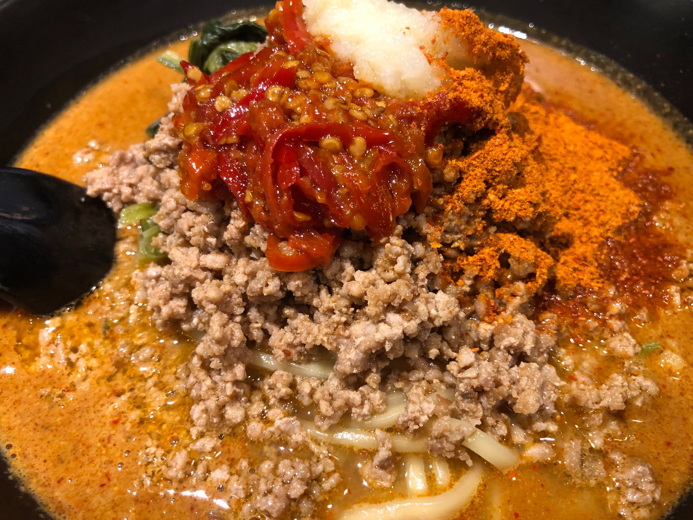
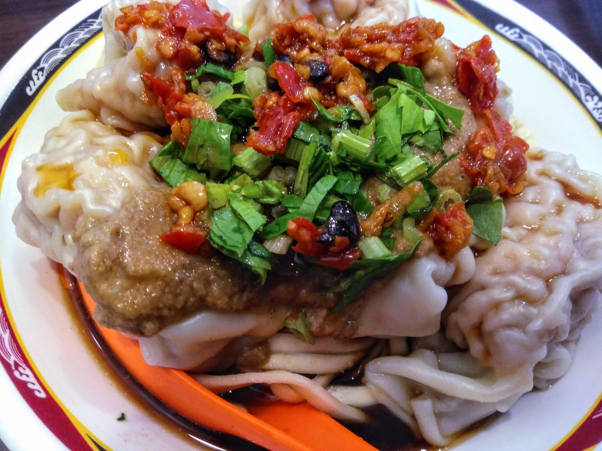

「トウガラシ×胡麻(またはピーナツ)」は至高

もうかれこれ数年、「地獄の担々麺 天竜」というお店の激辛担々麺にハマっている。だいたい１週間に１回の頻度で食べている。お店は暖簾分けを含めて複数あり、激辛マニアの間では有名な存在のはずだ。
激辛担々麺
ここの担々麺は単に激辛なだけではなく、スープに濃厚な胡麻を使っていることも、地獄の担々麺を地獄の担々麺たらしめる、必要欠くべからざる重要なファクターになっている。
そう、私がいまここであなたに伝えたいのは、「トウガラシと胡麻の組み合わせこそ至高である」という一種の価値観、あるいは真理と呼べるものだ。
「地獄の担々麺」についてはネットで多くの有名人やYouTuberが紹介しているので、これ以上の説明は譲る。
いまこの文章を読んでいるあなたはきっと、「地獄の担々麺のことを知りたい」と思ってこの記事を開いたわけではないはずだ。なぜなら、この記事のタイトルには「地獄の担々麺」や「天竜」といったワードを用いていないのだから。
あなたのいまの最大の関心ごとは、この私であり、私がなぜ「トウガラシと胡麻の組み合わせこそが至高」という結論に至ったのか。それを知ることを強く欲している。図星であろう。
あなたは、私のことを知りたいと思っている。そして私はあなたに、私のことを知ってもらいたいと思っている。だから、私は筆を取る。言葉（ことのは）を紡ぎ、それをインターネッツという情報の大海原に放ち、全世界に発信する。
関心のない人は、どうぞ、ブラウザの「戻る」ボタンをクリックして、希望する情報へとアクセスしてほしい。
閑話休題。私は台北で生活していた頃、「温州大餛飩」という名前のワンタン麺のチェーン店にハマっていたことがある。だいたい１週間に３回ほどは通っていた。 そこで特にハマっていたのは「紅油炒手麺」という、汁無しワンタン麺だ。白い平麺と、大ぶりのワンタンのほかに、ピーナッツペーストが載っているのが特徴だ。味付けとして醤油風の汁が少量かかっているが、私はそれに、卓上のお酢と、店特製のトウガラシ系調味料を加えて食べるのが大好きだった。

その調味料は、トウガラシや豆豉、ニンニクなどをオイルに浸した感じのもので、魚醤も入っている気がする。辛い物が苦手な人は全く食べられないであろうほどの辛さがあるが、ただ辛いだけじゃなく、旨みがあって病みつきになる。
これを、汁無しワンタン麺にかけて食べるのだ。深みのある辛さと濃厚なピーナッツペーストが融合し、絶妙なハーモニーがそこから生まれる。まるで重厚な交響曲のような味わいだ。
このお店に行けなくても、おうちでワンタンを茹で、ラー油とピーナッツペーストを載せて食べたら少しは味の雰囲気がわかると思う。ぜひ試してみてくださいな。